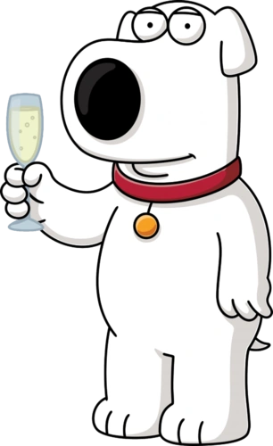

What is Family Guy ?
Family Guy is an American animated sitcom created by Seth MacFarlane The show centers around the adventures and activities of the dysfunctional Griffin family, consisting of father Peter Griffin, a bumbling and clumsy yet well-intentioned blue-collar worker; his wife Lois, a stay-at-home mother and piano teacher (in early episodes) who is a member of the affluent Pewterschmidt family; Meg, their often bullied teenage daughter who is constantly ridiculed or ignored by the family; Chris, their awkward teenage son, who is overweight, unintelligent, unathletic and, in many respects, simply a younger version of his father and Stewie, their diabolical infant son of ambiguous sexual orientation who is an adult-mannered evil genius and uses stereotypical archvillain phrases. Living with the family is their witty, smoking, martini-swilling, sarcastic, English-speaking anthropomorphic dog Brian, although he is still considered a pet in many ways.
Some Characters
Stewart "Stewie" Gilligan Griffin is the flamboyant and eccentric one year old infant of Peter and Lois Griffin. Mentally he seems much older,
even proclaiming to be shooting on a fifth grade level.
Stewie is well-spoken, with an advanced vocabulary,
an upper-class British accent and an ambiguous sexual orientation.
He refers to Peter often as 'The Fat man' and his mother by her given name, Lois.

Brian Edward Griffin is an 10-year old talking white Labrador who has lived with
the Griffin family since Peter picked him up as a stray as shown in "Brian:
Portrait of a Dog". He also possesses various anthropomorphic qualities,
such as the ability to speak intelligently, drive a car, and walk bipedally.

Glenn Quagmire (born Glenn Quagglechek) is the sex-crazed, perverted neighbor of the Griffins.
Quagmire is a former ensign of the U.S. Navy.
He currently works as an airline pilot.
Quagmire is roughly 5'8" tall in and 61 years old according to his driver's license,
he explains that he makes himself look younger by consuming carrots.